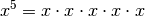

The Basics¶
This page contains all kinds of boring details that I don’t want to clutter the rest of the tutorial with.
+, -, *, /¶
I’m sure you already know how + and - work.
In this tutorial, a/b is written as  , and
, and a*b is
sometimes written as  but more often
but more often  .
.
You can also use these handy things:


See Numberphile’s awesome zero video if you’re wondering why dividing by zero is not allowed.
Negative numbers behave like this when multiplied and divided. Note how the two -‘s cancel out.


Python examples:
>>> 2 * (-2)
-4
>>> (-2) * (-2)
4
>>> (-3)/(-4)
0.75
>>> 3/4
0.75
>>>
Absolute Value¶
It’s easiest to think of the absolute value as stripping off the minus sign.
For example,  and
and  . In most programming languages,
. In most programming languages,  is
is
abs(x) or e.g. Math.abs(x).
Powers and Square Root¶
is x**y or pow(x, y) and  is
is sqrt(x) in most
programming languages.



Note that only works if  , and also
, and also
 (unless you use complex numbers, but so far we haven’t
needed them in this tutorial).
(unless you use complex numbers, but so far we haven’t
needed them in this tutorial).
Confusingly  , e.g.
, e.g.  where
where  (see above).
(see above).
If you’re wondering why anything to the power of 0 is 0, you can do e.g. this:


Because  with any
with any  ,
,  must be 1.
must be 1.
Equations¶
For example, if you know that  you can find like this:
you can find like this:


I started by substracting 1 from both sides and then I divided everything by 2.
You can add and substract any numbers you want, but you cannot multiply or
divide by zero; multiplying by zero would give  and make anything true.
and make anything true.
You can also apply most functions to both sides. For example, you can do this
with  :
:


See Also¶
This chapter shows only the things you need in the rest of this tutorial, but this cheat sheet is more complete.